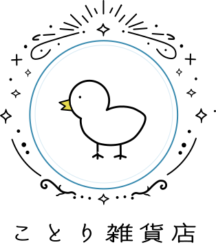
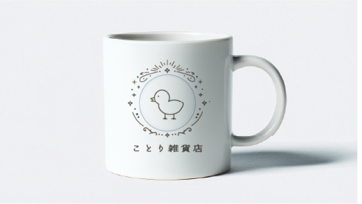
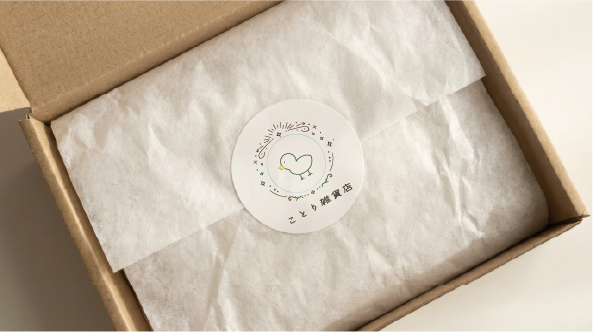

Parts Design / Logo Design
ことり雑貨店
雑貨店のやわらかな世界観を表現した、イラスト性のあるロゴデザインです。

作品名
ことり雑貨店
概要
雑貨店のやさしさや楽しさが伝わるよう、親しみやすい小鳥のシンボルと装飾を組み合わせて制作したロゴデザインです。 日常にそっと寄り添うような、あたたかみのあるブランドイメージを目指しました。
ターゲット
10〜30代を中心に、かわいらしい雑貨や物語性のある世界観を好む層を想定しています。 プレゼント選びや日用品の購入を楽しみたいユーザーに向けたデザインです。
デザイン意図
小鳥のモチーフを中心に、雑貨店らしいやわらかさと楽しさが伝わるように設計しました。 装飾的なフレームや線の表現を加えることで、単なる可愛さだけでなく、少し特別感のある印象になるよう意識しています。
工夫した点
シンボル部分の親しみやすさと、店名まわりの上品さのバランスを整えました。 マグカップや包装紙などの展開にも馴染むよう、視認性とブランドらしさを両立できる構成にしています。
Logo Application
使用イメージ
雑貨店の世界観が日常の中で伝わるよう、マグカップと包装紙のモックアップを制作しました。

